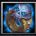

Cold Ring of Death
[Ring]
+1,425 Main Stat
+20% Attack Speed
+14.5% Skill Damage
+200 Health Regeneration
+100 Mana Regeneration
+200 Movement Speed
Active: "Darkness Ray" Nullify all damage taken for 4 seconds and then unleash damage taken in an AoE as magical damage (affected by Skill Damage)
Swordsman Specialty Enhanced Sword Storm (E,Q): Can Flash Step 1 more time
Swordsman Specialty Enhanced Quick Draw (D): Increases Damage by 15%
Assassin Specialty Enhanced Shadow Rush (T): Increases number of shadows by 1
Assassin Specialty Enhanced Shadow Slash (Q): 75% increased damage